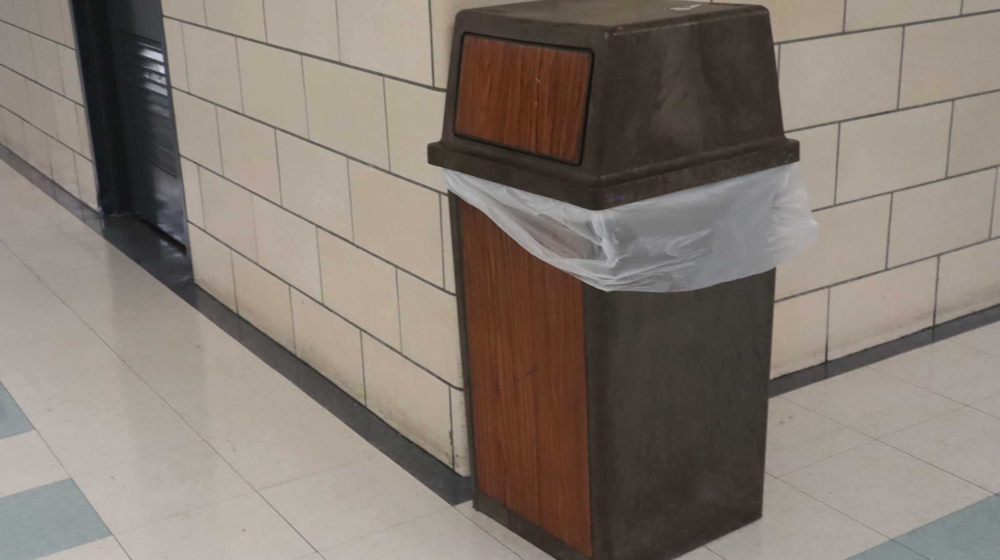
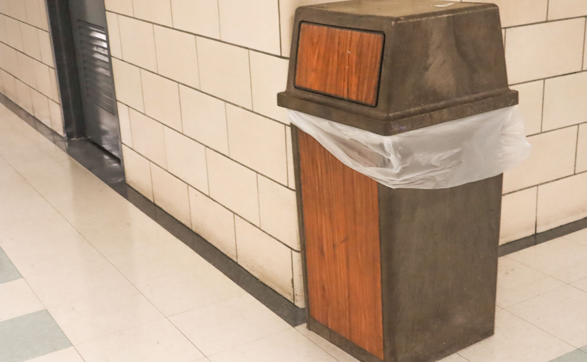

| Before | After |
|---|---|
|
 Before — underexposed; clipping visible |
 After — exposure balanced; straightened |
you can see the after image you see the color is lighter and brighter then the before the image and the after image have been crop to follow the rule of thrid. And the see the image look like in a warm color.